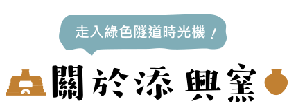
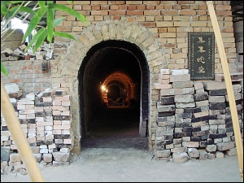
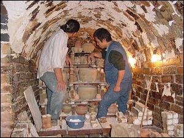
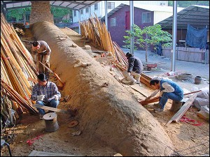
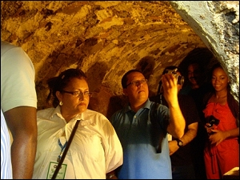
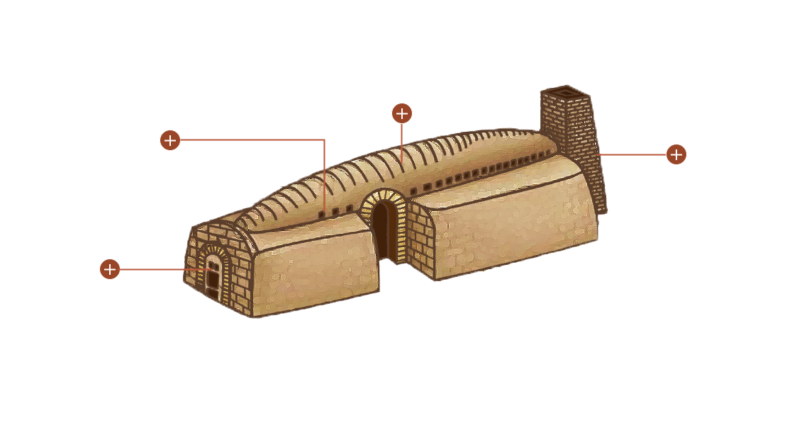
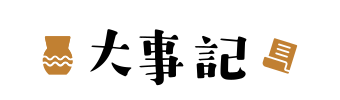

提供一個完善之作陶空間與簡易的技巧指導，讓您盡情享受親手作陶的樂趣。

窯門
平時開放給遊客參觀，燒窯時會以磚塊及泥土封起來。

窯燒前裝窯
進行柴燒之前，師傅需要將陶器一一排列在蛇窯內部，排列時皆需要注意許多細節，才不會導致作品在窯燒時破損或毀壞

窯窗
蛇窯的溫度控制全由人力掌控，因此師傅需要２４小時輪班照顧，當溫度到達穩定階段，則由左右兩邊的窯窗來保持溫度。

內部
蛇窯燒窯時會將窯門以磚塊封住，平時則開放讓民眾入內參觀。
蛇窯沿自於大陸福州，被燒陶人採用超過300年以上，是近代製陶業普遍採用的窯種，由於窯身瘦長，昔日此類官窯稱為【龍窯】，民窯則稱【蛇窯】。
添興窯於1955年創窯時，即建立第一座蛇窯，921大地震，遭受嚴重的損傷，終於在2000年8月3日修復完成，現已成為台灣地區現存仍實際燒窯的老蛇窯，繼續擔負延續台灣陶藝傳統的使命。

集集蛇窯小檔案
．窯室身長75台尺，窯頭長20台尺，總長95台尺，身高12台尺，煙囪高20台尺。
．按15度斜坡建築， 共有窯門3個，左右窯窗各25個〈共50個〉，窯頭柴灶孔2個及通氣孔1個。
．每年燒窯三到六次外，可供遊客走入窯中欣賞內部多年燒窯的痕跡，及緬懷先民燒
陶之辛苦，宛如走入時空隧道 。
由於目前需用以蛇窯燒的陶藝品不多，故每窯僅燒約全窯容積的三分之一，其他三分之二容積必須維持空燒，成本雖高但是為了維持老蛇窯的長壽，仍是值得。
(註：一般窯爐若長久不燒窯容易風化塌陷 。)
- 1993 手工業產品評選優良獎（陶瓷類首獎）
- 1994 手工業產品評選佳作獎、49屆全省美展教育廳獎
- 1997 飄逸瓶系列「草蝶蚊瓶」榮台灣陶展優選獎
- 1998 台中市中心個展
- 2002 南投文化中心特展
- 2006 史博館邀請展
- 2010 玉山美術獎邀請展
- 2011 文化局邀請展
第三代傳人林清河：陶瓷商品跟陶藝品最大的差別，就是在內涵很多人把藝術這二個字的定義，講得天花亂墜，但是我用那個洋人給我們一個最簡單的定義 就是真善美！真就是誠實，善就是把所有的事情，所有的作品做到盡善，那美，當然是一個結果。 我們希望這個作品是讓你越看越愛，越愛越用，這樣能夠長久的東西，我才認為它是陶藝品。
傳承陶藝文化，以傳統陶製品為基礎之創意生活產業，並繼續在窯場中注入「休閒體驗」及「陶藝文化園區」合併的精神，作為永續經營的模式。

-
創立於今集集綠色隧道旁，早期生產大水缸、酒甕、琉璃瓦及民生用粗陶等聞名全台。
-
因應台灣陶瓷生態逐漸轉型為「陶藝」結合「體驗」的創意文化窯場，並致力於陶藝推廣及傳承，以「生活陶藝化‧陶藝生活化」為發展主軸，多年來不斷創新、開發各種陶瓷產品。
-
獨家與工研院合作開發的「竹碳陶」技術已成為普受肯定的「文化結合科技」台灣原生文創產品。
-
獲登錄為南投縣文化資產歷史建築類別。
-
推出醞釀一甲子採用天然環保原物料的「璞真燒」系列
-
打造全新「樟香」質感系列，以綠色隧道的老樟樹外型發想，天然泥質釉呈現渾然天成的手藝質感。

{kind=link}
{kind=link}
{kind=link}
{kind=link}
{kind=link}
{kind=link}
{kind=link}
{kind=link}
{kind=link}